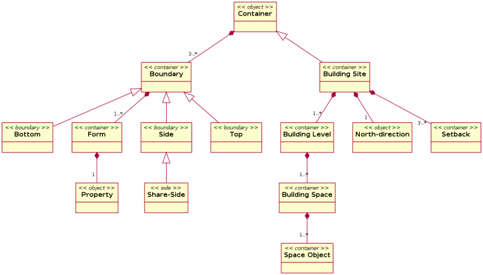

Esta página es un intento de recoger ideas sobre el diseño paramétrico en el campo de arquitectura para construir el Módulo de Arquitectura. Ya que es un poco diferente que el campo de la mecánica, quiero definir conceptos un poco mejor antes de pensar en como comenzar a ponerlo en práctica... ¡ Siéntete libre de añadir sus ideas!
software similar
formatos de archivo
- STEP - ya funcionando completamente en FreeCAD
conceptos generales
- FreeCAD es perfecto para la tarea. El diseño con objetos paramétricos reducirá enormemente el único verdadero problema que yo veo en FreeCAD, que es el de trabajar con miles de objetos. Todo lo necesario está ahí ya, como tipos de objeto personalizados, propiedades personlizadas, etc. La dificultad principal, diseñar un modelo general para tratar con la interacción entre objetos, está ahora potencialmente superado, desde que FreeCAD introdujo un gráfico de dependencia sobre todo con ese objetivo.
- BIM (building information modeling) es un concepto inventado por diversos comercializadores de software de diseño paramétrico para construcción, principalmente Autodesk. Significa que ya no proyectas una construcción dibujando sin más, sino insertando información (parametros). El software debería entonces producir un dibujo automáticamente. Esto es
una auténtica estupidez altamente cuestionable en mi opinión y solo un concepto propagandístico. Incluso en los más avanzados programas de BIM (Revit, Archicad y Microstation GC), no puedes abstraer el acto de dibujar a menos que quiera eliminar cualquier tipo de creatividad. El objetivo aquí no es ser el más automátizado, sino mantene la flexibilidad.
- El diseño paramétrico en ingeniería mecánica está por lo general basado en el historial de cambios y la resolución de restricciones. Estos dos conceptos tienen mucha menos importancia en el diseño para construcción, ya que raras veces quieres avanzar lentamente atrás en los pasos que diste (son por lo general muy simples), y manteniendo restricciones como horizontabilidad, ángulo, o distancia, incluso si son útiles, no son tan importantes como en el diseño mecánico.
- El diseño paramétrico en arquitectura está basada en arquetipos: Muro, puerta/ventana, techo, losa, viga, son algunos de los básicos. A parte de ellos, lo que principalmente tendrás son derivaciones de ellos
- Hace un uso extensivo de los ensamblajes: por ejemplo varias ventanas se agrupan juntas para formar un muro cortina
- Las relaciones son la llave. Los elementos son raras veces muy complejos o requieren mucho trabajo de modelado, pero a menudo deben ser transformados por la yuxtaposición o la inclusión de otros elementos. Por ejemplo, una pared no es nada más que una extrusión simple, pero debe unirse a otras paredes, o tomar un agujero cuando una ventana es insertada en ella. Cómo construir ese modelo de relaciones y cómo/dónde almacenarlo es el principal problema.
- Un problema de prácticamente todos los programas de construcción paramétricos es que confían demasiado en esos objetos arquetipo. La creación de otros nuevos, no en librerías de piezas, es extremadamente difícil (Archicad) o muy sencilla (Revit) pero siempre con un problema, y es que siempre existe una gran problema de comunicación entre las piezas "paramétricas" y las "no paramétricas". Básicamentesolo sacas el verdadero potencial del software si solo usas partes que estén pensadas para este tipo de trabajo. Por ejemplo, transformar un simple sólido en un muro es extremadamente problemático.
- La velocidad de cálculo de los objetos en mi opinión no es de gran importancia. La modificación de un objeto no debería afectar a muchos otros objetos, y se realiza normalmente en una fase de ajuste, así que no es tan importante tener actualizaciones tan rápidas. Una cosa importante, es siempre guardar la forma final de los objetos, de modo que al volver a abrir los modelos guardados no debería requerir cálculos. Antes de guardar, todo debería ser recomputado.
- Una avanzada herramienta de sección es muy importante. Planos del piso, Elevaciones, Secciones, Planos del techo - todos son herramientas BIM similares, pues tienen planos de corte axonométricos/ortográficos a través del modelo BIM.
- Luego está el problema de las anotaciones. Dónde dibujar las cotas? en el modelo? Directamente en la hoja svg? No es muy práctico... Este punto debería investigarse. Las cotas perte4necerán a una capa que pueda activarse y desactivarse en las impresiones. También, ya que las impresiones se realizan a una escala específica, las cotas estarán escaladas para coincidir con la escala seleccionada o una personalizada, seleccionada por el usuario.
- Una "construcción paramétrica" debería entenderse como una mezcla de objetos con capacidad de relacionarse (basados en arquetipos) y otros, no basados en arquetipos. La transformación de un objeto de una categoría a la otra debería ser factible, y todo debería comportarse del mismo modo para las secciones (y la acotación).
- Un sistema para la creación de nuevos componentes y ensamblajes, gráficamente si es podible. Los ensamblajes deberían trabajar como sub-modelos que pueden ser insertados/importados/vinculados a cualquier modelo BIM. De este modo, un sub-modelo puede ser actualizado/modificado y eso se reflejará automáticamente en el modelo BIM (si el sub-modelo está vinculado, si es "importado", entonces los usuarios pueden seleccionar so actualizar el modelo para reflejar la última versión del sub-modelo, de otro modo permanecerá como importado últimamente).
- Un modo de edición, de modo que se pueda modificar la forma original que general la pieza.
sobre los arquetipos
- Todos los arquetipos siempre deberían comportarse como objetos de programación orientada a objetos: Puede hacer una nueva clase basada en otra clase.
- Todos los arquetipos deberían ser capaces de interactuar recíprocamente con objetos comunes. Para ello, los objetos comunes probablemente necesitarían propiedades personalizadas.
- Las paredes deberían definirse por un contorno simple (que sería extruido horizontalmente, y verticalmente), una forma plana (que simplemente sería añadiéndole un grosor) o un sólido (al que no se le haría nada). El resultado siempre sería un sólido. Sus parámetros por lo tanto variarían, dependiendo de sus datos en el momento de su creación.
- Los muros deberían conectarse al cruzan/tocar muros
- Los muros podrían estar en diferentes capas (materiales). Los de los mismos materiales se unirían juntos.
- Las puertas/Ventanas son objetos bastante simples, sus parámetros casi sólo conciernen a su aspecto interno. Pero deben tener "una caja" que cree agujeros en otros objetos.
- Las vigas y losas son simples también, pero dependiendo de sus materiales deben ser capaces de unirse a otras losas, vigas y paredes. Las vigas y las losas también podrían unirse en un elemento solo "estructural". Hay pilares también. Todos ellos podrían ser definidos del mismo modo que las paredes, por un contorno, una forma o un sólido. Todos ellos podrían estar definidos del mismo modo que los muros. Podrían incluso estar basados en los mismo términos que las paredes...
- Los techos son un tipo especial de objetos, no muy interesantes por si mismos, pero útiles porque es un fastidio calcular un techo manualmente. Basicamente necesitas crear una forma basada en un contorno y su inclinación. Debería ser sencillo extenderlos posteriormente a otros tipos de techos.
- Los ensamblajes tienen que ser definidos más adelante. ¿Están básicamente creados de otras partes, que podrían ser formas, ventanas, etc. ... y propiedades personalizadas, como la repetición de matrices, la deformación (seguir una forma?), etc.
- El Constructor de Sitio - un juego especial de instrumentos debe manejar la creación de sitio y la actualización. Esta caja de herramientas tiene que ser compatible con otro comandante Abren el terreno/sitio De la fuente modelers y usos GIS (como la HIERBA). SiteBuilder tendrá la creación en cuenta de un sitio basado en curvas de topo, y la manipulación/actualización fácil del sitio. Esto permitirá a la creación fácil de : las aceras, contienen y cortes de freno, caminos, diseño, aparcamientos con todos los sistemas de alcantarilla/final requeridos, etc. La base de datos generada tendrá la estimación en cuenta del corte y se llenará así como otra información requirió para hacer el trabajo de sitio. SiteBuilder será útil también para generar la excavación requerida para un proyecto.
- Constructor de situaciones - Un conjunto especial de herramientas debe manejar la creación y actualización de las situaciones. Esta caja de herramientas necesita ser compatible con otros modeladores de situaciones/terreno de código libre y aplicaciones GIS (como GRASS). El Constructor de situaciones permitirá la creación de situaciones basadas en curvas topográficas, y una sencilla manipulación/actualización de la situación. Esto permitirá de forma sencilla la creación de: aceras, bordillos y cortes de bordillos, caminos, paisajismo, aparcamientos con todos los sistemas de alcantarillado/desagüe requeridos, etc. La base de datos generada permitirá para estimación cortar y rellenar así como otro tipo de información requerida para hacer la situación funcionar. El constructor de situaciones será útil también para generar la excavación requerida para un proyecto.
arquetipos (tipos de objetos)
Muros
Los muros son un componente vertical de la construcción que sigue un camino en una planta determinada (i.e. primera planta, tercera planta, etc.) o está extruido horizontalmente a partir de una superficie vertical. Los muros están compuestos de varias capas (materiales, cada uno con espesor y propiedades térmicas específicas), y permiten la apertura (resultado de sustracciones) o apéndices (uniones). Cuando dos muros diferentes intersecan, el usuario puede seleccionar la opción de conectar los dos muros (con similar estructura). Todos los parámetros de un muro están disponibles para los cálculos estructurales y térmicos, así como para generar informes (listas de materiales). De este modo un muro, área de las caras, volúmenes, cantidades de material, etc. están directamente insertados en la lista de materiales y la estimación de costes.
Como ya se ha mencionado, los muros en BIM están definidos por una línea/polilínea/etc. Esto representa la línea central del muro. Esta línea puede alinearse con la cara exterior del muro, la cara interior del muro, o el centro del muro, or si el usuario lo especifica, puede estar definido de forma personalizada. Los muros tienen varios parámetros que los definen:
- - Planta en el que están situados( i.e. primera planta, sótano, quinta planta, etc.)
- - Ancho
- - Alto
- - Composición
The level in which walls are placed, require a previous insertion of that "level" by user. Once a level is inserted in the BIM model, that creates automatically a horizontal section, that in turn will generate a "sheet", i.e. once I insert level called "First Floor" at height 0.00 that will automatically section all the visible elements at that height (plus and minus up and down so doors/windows/openings will be visible in that floor plan). Levels and elevations are similar in concept, as basically both are "section planes" located to a certain position/rotation in the 3D space.
Los muros permiten la inserción de librerías como: puertas, ventanas, muros cortina, y otro tipo de objetos personalizados creados que requieren una apertura en dicho muro. Si solo se necesita una apertura, puede insertarse también.
Puerta/Ventana (Insertar elementos)
Las puertas y ventanas son en realidad la misma cosa, un objeto completo el cual puede tener un montón de parámetros para definir su forma, y un volumen visibley un volumen invisible que se utiliza para cortar aperturas a través de los muros que recibe. Están típicamente insertados en un muro, pero no siempre. Aunque pueden diferir mucho, deberían ser sencillos de diseñar.
Techos
Los techos son simplemente un modo is simply a hábil de calcular las intersecciones de las pendientes del techo
Losas
Las losas son horizontales, creadas a partir de la extrusión vertical de un contorno cerrado o una cara, debería conectar por material con otros elementos estructurales, y puede tener un número de apéndices(uniones) o agujeros(sustracción de agujeros), y capas (materiales). Las áreas horizontales y el volumen debe ser calculado
Viga/Pilares (Elementos estructurales)
Un contorno cerrado o cara extruída en cualquier dirección, puede tener un número de apéndices (uniones) o agujeros (sustracción).
Ensamblaje
Un grupo de ventanas que puede estar formada como un todo
mecanismos genéricos
- Dependencia: Las ventanas deben saber en que muro están insertadas, los muros deben saber que ventanas contienen, etc... Ver piezas booleanas
- Juntas: Los muros deben saber con que otros muros están conectados y correctamente conectados sus materiales juntos. El movimiento de un muro por tsnto debe recalcular sus vecinos. Establecer un gráfico de posibles tipos de junta
- Categorías de bordes: Algunos bordes no deben dibujarse cuando están entre 2 objetos del mismo material. Marcar los bordes para seleccionar después como renderizarlos.
- Auto-agrupación: Los objetos de un cierto tipo van automáticamente dentro de grupos específicos
- "Diseñador de ventanas": Una sencilla forma de diseñar ventanas paramétricas, basada en perfiles
Analisis energético
- La construcción necesita optimizarse de forma apropiada al programa que sirve así como a las particularidades geográficas de la localización. Por ejemplo un único proyecto se puede construir en Miami, Florida (Us) o Frankfurt (Alemania) o Sydney (Australia). Sin embargo, debe optimizarse con importantes diferencias. Lo que es apropiado para una localización, puede ser inapropiado para otra localización. Los diseños que generamos con FCBIM deberían ser "comprobados" y ver como es su rendimiento en términos de consumo de energía. En este momento existen algunas utilidades que permiten la optimización energética de las construcciones. Los principales aplicaciones de software libre/gratis son: EnergyPlus, OpenStudio (una interfaz de usuario para EnergyPlus) yESP-r.
Simulación de la luz solar
- La recolección de la luz del día es uno de los acercamientos básicos en el diseño sostenible. Muchos diseños modernos dan la espalda a la luz natural y dan como resultado soluciones indeseables para los seres humanos. En EE.UU un gran porcentaje de edificios crea el llamado Síndrome de Edificio Enfermo, que conduce a problemas de salud para la gente que vive y trabaja en ellos. La utilización de la luz del día alivia en parte este problema. FCBIM debería incorporar los instrumentos que permitan realizar simulaciones de la luz del día, tal vez Radiance o LuxRender o Yaf(a)ray.
HVAC(Heating, Ventilation, and Air Conditioning) & Ventilación Natural
- Herramientas para insertar dibujos y calcular HVAC (Calefacción, Ventilación, y aire acondicionado) y permitan calcular para el uso de la ventilación natural. Puede que OpenFOAM debiera ser un candidato en este área, que complementará a FCBIM.
Capturando el conocimiento en Construcción
El esfuerzo en crear un módulo que haga posible para FreeCAD proporcionar un entorno de Modelado de información de construcción (BIM) contemporáneo está en proceso. El esfuerzo está orientado a llevar sus capacidades a compararse a aquellos sistemas de modelado arquitectónico más maduros como Revit. Reconocemos las limitaciones en las implementaciones de BIM disponibles siendo una de ellas el ignorar el conocimiento de construcción. Por ese motivo también perseguimos un objetivo paralelo de desarrollar capacidades que permitan a FreeCAD capturar dicho conocimiento típicamente creado principalmente en las primeras fases del diseño pero también en la parte final de detalle. En las siguientes secciones, documentaremos las capacidades que no son tan habituales en las herramientas disponibles pero que creemos son más apropiados y eficientes en capturar la información y el conocimiento en construcción desde el concepto a la demolición. Las secciones siguientes proporcionan especificaciones y directrices acerca de la parte de "El qué" de este esfuerzo. Rellenaremos "el cómo" de los progresos de nuestro esfuerzo. Está de más decir, que las cosas se cambiarán o serán enmendadas así como nuestra comprensión y la puesta en práctica vayan juntas.
Descripciones de Procedimientos para Identificar Objetos
La sesión de diseño de construcción comienza con la situación donde el diseñador establece la dirección Norte e introduce los retranqueos apropiados según la reglamentación de construcción aplicable en el lugar de diseño. Haciendo esto está establecida la máxima huella para la nueva construcción.
Objeto 1: Situación de la construcción
Solo existe una situación de la construcción en un proyecto. Este objeto debería crearse tan pronto como la decisión de diseñar una casa esté tomada por el diseñador. Debería existir como una forma de contenedor (porque separa un espacio. Veremos algo más sobre esto luego) con sus lados, parte superior e inferior. Los lados pueden ser definidos de manera interactiva en términos de longitud y ángulo. También debería ser posible añadir o eliminar lados según se necesiten. Aunque la parte inferior es creada plana, también se puede redefinir con contornos para proporcionar la pendiente apropiada. La parte inferior es la única parte de la situacion que debería ser visible.
Objeto 2: Dirección Norte
La dirección Norte es un objeto que establece el ángulo en la dirección del Norte. Es una parte de la situación y hacer posible para la situación determinar los vientos predominantes, el movimiento del sol, etc.
Objeto 3: Retranqueo
Hay distancias desde los límites que se deben respetan según la normativa. Son parte de la situación pero requieren de ciertos parámetros para ser proporcionados en función de determinar que límites y que distancias. Por ejemplo el retranqueo desde los límites cerca de la carretera pueden ser diferentes del retranqueo desde los límites cercanos a otra situación de un vecino. Esta información puede proporcionarse interactivamente pero con la dirección Norte establecida, es posible para los diseñadores introducir esta información durante la recolección de los requerimientos del diseño. El retranqueo, como la situación, es un tipo de objeto contenedor.
Objeto 4: Nivel de construcción
En este punto la máxima huella de la construcción se ha establecido. Esta huella representa el primer nivel de la construcción. El nivel de la construcción es un objeto que hace posible integrarlos diferentes sistemas de construcción. Ejemplos de sistemas de construcción son el arquitectónico, estructural, eléctrico, etc. El nivel de construcción, como la situación de la construcción, es una forma de contenedor. Pueden existir uno o más niveles que son habitualmente apilados encima de los otros comenzando por la parte inferior. El primer nivel se establece después de la designación del retranqueo para todos los límites de la situación. Se pueden crear niveles adicionales pero sólo la elevación de la inferior es modificada siendo los límites del nivel invisibles.
Objeto 5: Espacio de construcción
El espacio se define para satisfacer la principal función de la construcción como un espacio para dormir, comer, relajarse, trabajar, etc. Los espacios se crean y agrupan en plantas. Hay diferentes tipos de espacios que proporcionan las funciones apropiadas en diferentes tipos de construcción. Por ejemplo en una construcción de tipo residencial existen 4 tipos principales que incluyen las funciones de dormir, estar, servicios y tráfico.
Objeto 6: Objeto espacio
Esto representa todo lo necesario que pueda localizarse en un espacio. Cada objeto tendrá cierto conocimiento fundamental de sus requerimientos. Por ejemplo para describir un área de estar, un objeto con al menos un área de asientos, serán necesarios unos requerimientos de espacio y altura máxima.
Objeto 7: Contenedor de construcción
La mayoría de los objetos descritos hasta ahora son tipos de contenedores. Los contenedores tienen un área interior que e aislada por límites. Los límites son Inferior', Superior y Lados. Dos contenedores pueden compartir un límite. Cuando esto ocurre un objeto especial "lado- compartido" reemplaza los lados individuales de los contenedores. Se establece un vínculo entre los dos contenedores y hace posible comunicarse entre ellos. Por ejemplo cuando existe un lado compartido entre un área de descanso y un área de servicios como un dormitorio y un baño, ese lado espera alguna forma de tratamiento para atenuar el ruido para evitar inundar el área de descanso con demasiado ruido. Cada límite en un contenedor tiene una Forma. Una forma es un tipo de objeto contenedor que puede tener las descripciones necesarias o Propiedades de los típicos materiales de recubrimiento de la construcción.
Diagrama de objetos
El siguiente diagrama ilustra las relaciones entre todos los objetos descritos hasta ahora.
 Objetos para capturar el conocimiento de la construcción
{kind=link}